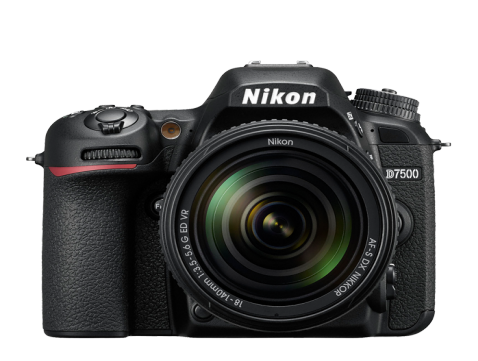

NIKON D7500

Product Details
Born from a desire for flagship performance and
innovation in a more compact and streamlined connected camera, the D7500
delivers the game-changing resolution, ISO range, image processing and energy
efficiency of the award-winning D500 in an enthusiast-level DSLR. Simply put,
the D7500 is built to outperform any camera in its class with top-tier image
quality, blazing speed, flawless autofocus, 4K Ultra HD video and pro-grade
creative tools—all in a comfortable, rugged design. This is a camera for the new
generation of creators.
Follow your Passion Wherever it Leads
Born from a desire for flagship performance and innovation in a more compact
and streamlined connected camera, the D7500 delivers the game-changing
resolution, ISO range, image processing and energy efficiency of the DX
flagship D500 in an enthusiast-level DSLR. Simply put, the D7500 is built to
outperform any camera in its class with top-tier image quality, blazing
speed, flawless autofocus, 4K Ultra HD video and pro-grade creative
tools—all in a comfortable, rugged design. This is a camera for the new
generation of creators.
Bring your Vision to Life
The D7500 uses the same 20.9 MP DX-format image sensor and EXPEED 5 image
processing engine as the D500, taking your photos and videos to the next
level. Capture with phenomenal sharpness and tonality, especially in low
light situations like concerts, sporting events, parties and events.
8 FPS Continuous Shooting
Improved buffer for shooting
RAW. Capture 8 frames per second continuously, up to 100 JPEG Fine frames or
up to 50 14-bit lossless compressed RAW frames. With up to 50 RAW shots
captured, continue taking photos even while the previous RAW images are
being written to the memory card.
Powerful Focusing System
Lock on to fast subjects with 51 available focus points, 15 cross-type
sensors and group-area AF for sharper, faster detection in low light.
Brilliant Metering
The D7500 uses the same
180,000-pixel RGB sensor as the D500 to detect human faces and improve AF
performance during high speed shooting.
Tilting 3.2-inch
Touchscreen
Tilt the large 3.2-in touchscreen up or down to
shoot at high or low angles and simply touch where you want focus when using
Live View. Quickly swipe through your shots, pinch to zoom and more.
Rugged Design
The D7500 uses a Monocoque design and
extensive weather sealing to withstand moisture, dust and some heavy use.
Comfortable Performance
Slimmer ergonomics and a
deeper grip improve stability for handheld shooting and comfort for all day
shooting or using telephoto, tele-zoom or all-in-one NIKKOR lenses.
Up to 950 Shots* on One Battery
DSLRs excel at energy
efficiency, and the D7500 is particularly efficient. Capture approximately
950 shots on a single battery charge.
*Per CIPA standards, with
Bluetooth and Wi-Fi turned off.
Master the Light
Add balance, depth and drama to your images with the D7500’s built-in flash,
which uses detailed, in-camera scene analysis to add just the right amount
of light to your subject. Ready to get even more creative with light? The
D7500 has wireless commander capability with up to 2 groups (A/B) of
line-of-sight Speedlights or 3 groups (C/D/E) of radio-controlled
Speedlights*.
*With optional WR-R10 wireless remote controller and
SB-5000 Speedlight(s).
4K ultra HD Video
If
you’ve been itching to enter the world of filmmaking, the D7500 is your
gateway DSLR. Record rich and detailed 4K Ultra HD or Full HD videos up to
29 minutes 59 seconds through industry-leading NIKKOR lenses while using
pro-level video features like power aperture control to adjust aperture
while recording and touch focus control. Create beautiful 4K Ultra HD
time-lapse movies. Movies can be recorded in MP4 or the conventional MOV
format, allowing easy playback on smart devices. The D7500 adjusts to your
creative workflow with the freedom to record to an external device, the
camera’s memory card or both simultaneously.
Connected to
your World
Share your most impressive shots with the world the
minute you take them. Install Nikon's SnapBridge app on a compatible phone
or tablet and connect to the D7500 for instant photo sharing, automatic
backups and even remote camera triggering—great for wildlife shooting,
parties, self portraits and group shots with you in them.
Creativity on Demand
Beyond its outstanding image capture, the
D7500 includes powerful performance enhancing features. In-camera batch
processing improves handling of large numbers of RAW images. Auto AF
fine-tune in Live View is also inherited from the D500 to simplify
adjustment for minor variations between the camera and lens. Advanced
Picture Control tools, including a new Auto option; Auto ISO in Manual Mode
and Zebra stripes for detecting overblown highlights help you take full
creative control. A new and improved multiple exposure feature gives you the
choice of saving each individual frame in addition to the final composited
image.
Features
|
||||||||||||||||
Canada Distributors
|
||||||||||||||||